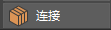

使用“连接工具”(Connect Tool)可以通过在多边形组件之间插入边来连接这些组件。顶点将直接连接到连接边，而边将在其中点处进行连接。插入边可以将细节添加到简单网格。

可以通过以下方式访问“连接工具”(Connect Tool)：
- 访问建模工具包(Modeling Toolkit)窗口的“工具”(Tools)部分，然后单击 。
- 选择“网格工具 > 连接”(Mesh Tools > Connect)，访问主菜单栏。
- 选择“连接工具”(Connect Tool)（以打开标记菜单，在选中对象、边或面后，按住 Shift 键单击鼠标右键），访问标记菜单。